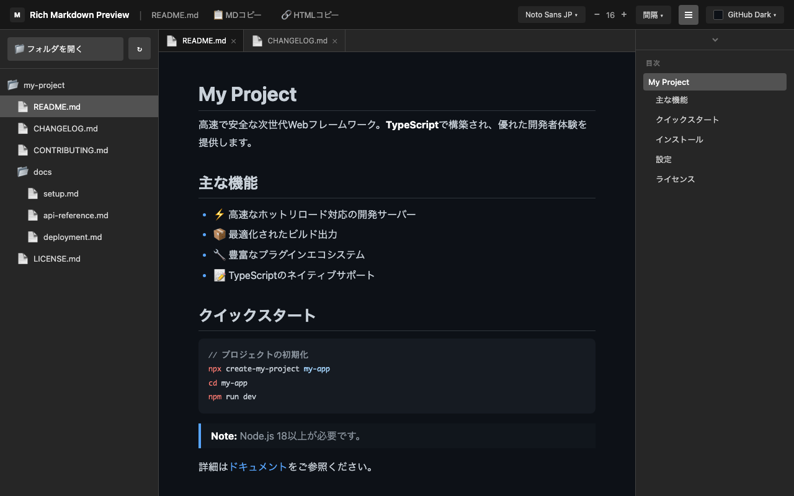
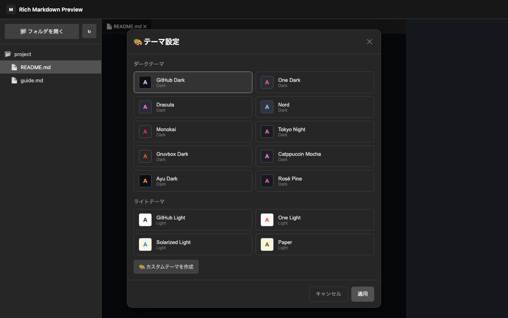
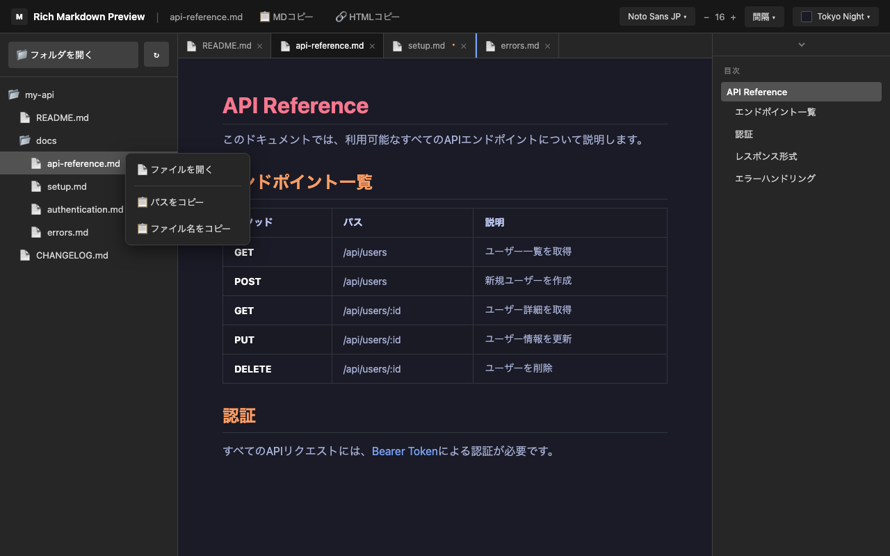

Markdownプレビューに物足りなさを感じていませんか。25テーマ、日本語フォント、フォルダ管理、ライブ同期——妥協しないプレビュー環境を、ブラウザの中に。 Tired of bare-bones Markdown previews? 25 themes, Japanese fonts, folder management, live sync — an uncompromising preview environment, right in your browser.

テーブル、リスト、引用、画像を美しくレンダリング。日本語フォント5書体やフォントサイズ、行間、文字間隔まで細かく調整でき、あなただけの読みやすさを実現します。 Beautiful rendering of tables, lists, blockquotes, and images. Switch between 5 Japanese fonts, fine-tune font size, line height, and letter spacing for your perfect reading experience.
H1〜H6の見出しから目次を自動構築。クリックで該当箇所へスムーズスクロール。スクロール位置に応じて現在の見出しをリアルタイムでハイライトし、目次パネルも現在位置に自動スクロール。 Automatically builds a table of contents from H1–H6 headings. Click to smoothly scroll to any section. Real-time highlight of the current heading based on scroll position, with the TOC panel auto-scrolling to keep the active item visible.
GitHub Dark/Light、Dracula、Nord、Tokyo Night、Monokai、Catppuccinなど人気テーマを網羅。カスタムテーマでは21の色要素を個別設定可能。H1〜H6の見出し色を個別に指定できる拡張はほぼ存在しません。 Popular themes including GitHub Dark/Light, Dracula, Nord, Tokyo Night, Monokai, and Catppuccin. Custom themes with 21 individually configurable color elements — almost no other extension lets you set H1–H6 heading colors separately.

フォルダを選択するだけでMarkdownファイルをツリー表示（最大5階層）。複数ファイルをブラウザライクなタブで管理。ドラッグ&ドロップで並べ替え。前回のセッションを自動復元。 Select a folder to display Markdown files in a tree view (up to 5 levels deep). Manage multiple files with browser-like tabs. Drag and drop to reorder. Automatically restores your previous session.

プレビュー上でテキストを選択してレビューコメントを追加。「修正」「削除」の2種類のコメントで指示を記録し、未解決コメントをAIエージェント向けの構造化指示書（Markdown / JSON）としてエクスポートできます。 Select text in the preview to add review comments. Record instructions with "Modify" and "Delete" comment types, then export unresolved comments as structured AI agent instructions in Markdown or JSON format.
一般的なMarkdownプレビュー拡張機能との比較 Compared to typical Markdown preview extensions
| Rich Markdown Preview | 一般的な拡張 Typical Extensions | |
|---|---|---|
| フォルダ管理 & ライブ同期 Folder management & live sync | ツリー表示 + 1秒以内に自動反映 Tree view + auto-refresh within 1 second | 単一ファイル / 手動リロード Single file / manual reload |
| タブ & セッション復元 Tabs & session restore | 複数タブ + 次回起動時に自動復元 Multiple tabs + auto-restored on launch | 1ファイルずつ / 毎回開き直す One at a time / start from scratch |
| テーマ & カスタマイズ Themes & customization | 25種類 + 21要素を個別設定 25 presets + 21 color elements | 数種類 / 背景色程度 A few options / background only |
| 日本語フォント & テキスト設定 Japanese fonts & text settings | 5書体 + サイズ・行間・文字間隔 5 typefaces + size, height, spacing | 未対応が多い Rarely supported |
| 目次 + スクロール同期 TOC + scroll sync | リアルタイム追従 Real-time tracking | 静的な目次 Static TOC |
| Mermaidダイアグラム Mermaid diagrams | テーマ自動切替対応 With auto theme switching | 未対応が多い Rarely supported |
| レビューコメント Review comments | テキスト選択で即追加 + AI指示書エクスポート Select text to add + AI instruction export | 未対応 Not supported |
4つのステップで簡単に始められます。 Get started in just 4 simple steps.
Chrome Web Store からインストールして、拡張機能のアイコンをクリック。 Install from Chrome Web Store and click the extension icon.
「フォルダを開く」からMarkdownファイルが含まれるフォルダを選択。デスクトップからファイルをドラッグ&ドロップして開くことも可能。 Select "Open Folder" to choose a folder containing your Markdown files. You can also drag and drop files from your desktop to open them.
ファイルリストからプレビューしたいファイルを選択。 Select a file from the list to preview it instantly.
お好みのテーマやフォントを設定してお楽しみください。 Customize your theme and font settings to your liking.
Rich Markdown Preview はユーザーのプライバシーを尊重します。データを外部に送信せず、すべてのデータはローカルに保存されます。 Rich Markdown Preview respects your privacy. No data is sent externally — everything is stored locally on your device.